How it works, visually
The three kinds of dependency
Every line in the graph is one of three kinds. The kind decides how worried you should be.
How a finding is classified
When you ask "what breaks if I change column C?", each downstream item lands in exactly one bucket:

Confirmed findings always carry a proof path: the exact edges, with file:line:column, that connect your change to the affected column. You can click through them in the HTML report.
Unknown stays unknown
If two joined tables both have an id, a tool that picks one would sometimes be wrong. LineageSutra AI records the join, raises a warning, and draws no edge for the ambiguous column. Warnings are counted and shown first in every report.
What happens when a column is renamed

compare scans the baseline and the new SQL, finds removed columns, then walks the baseline graph to list who consumed them. That list is the breaking-change report.
Layers and what is real today
Green means implemented and tested. Amber means partly done or untested in real hosts. Grey means not started. The status page lists every item.
How accurate is it?

54 hand-labelled SQL cases, scored on exact edge sets. This is a regression corpus the author wrote before running the parser. It proves the documented subset behaves as labelled. It does not prove accuracy on your SQL; run audit --root ./sql to see how much of yours it could read.
How fast is it?

Measured by the audit on the machine that ran it, with synthetic data. Your numbers will differ.
How the report stays honest
- Every report is sealed with a SHA-256 hash of its canonical JSON.
verifyrecomputes it and fails if any byte changed.- Output never depends on file order, so the same SQL always gives the same seal.
- The seal detects edits. It does not prove who made the report.